操作系统笔记07 进程同步
背景
- 协作进程可以通过内核提供的IPC工具共享一块内存。一个进程中的多个线程可以通过使用全局变量来共享一段内存。
- 共享数据的并发访问可能会导致数据不一致。 保持数据一致性需要机制来确保协作进程的有序执行。
- 对生产者和消费者问题的解决方案：允许同时在缓冲区内最多只有（BSIZE - 1）项。
- 假设我们通过添加一个变量计数器来修改代码。
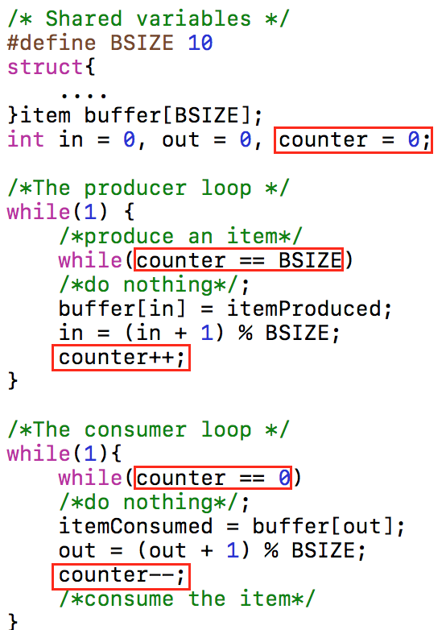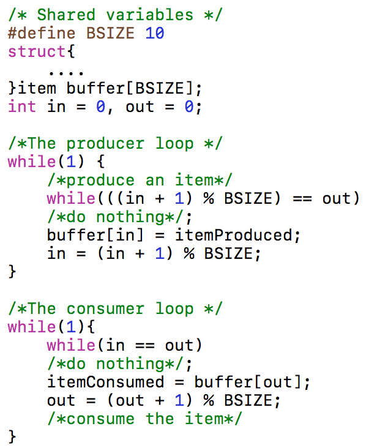 - 需要注意的是，可能由于这两个进程并发操作变量counter，而得到不正确的运行结果。
- **
竞争条件**：多个进程并发地访问和操作同一数据且执行结果与访问发生的特定顺序有关。 - 为避免竞争条件，需要保证一段时间内只有一个进程能够操作变量。
- 为了实现这种保证，要求进行一定形式的**
进程同步**。
临界区问题
- **
临界区**：一段访问共享资源的代码。 - 竞态条件的解决方案必须满足以下4个要求：
- 相互排斥：任何两个进程不能同时处于临界区。
- 前进：临界区外运行的进程不能阻塞其他进程尝试进入其临界区，以确定谁能下一个进入临界区。且这种选择不能无限推迟。
- 有限等待：没有任何一个进程需要无限期等待进入其临界区。
- 速度：不应该对CPU的速度和数量做任何假设。
- 临界区问题：设计一个以便进程协作的协议。
- 每个进程必须请求允许进入其临界区。实现这一请求的代码段称为进入区。
- 临界区之后可有退出区。其余代码为剩余区。
Peterson算法
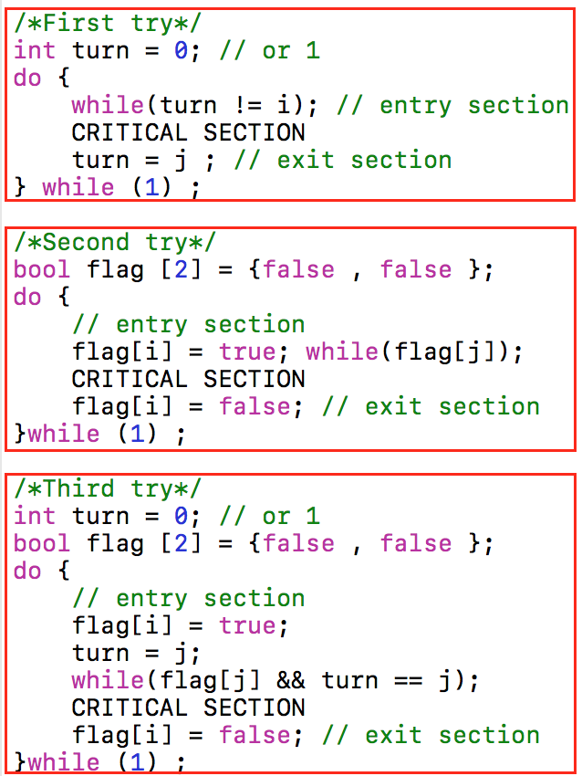 >First & Second try都不满足“前进”这个要求。Third try即为Peterson算法，满足四个要求。硬件同步
- 可以使用简单的硬件指令来解决竞争条件。
- 单处理器环境(通常为非抢占内核所用)：禁用中断
- 多处理器环境：特殊指令 ①TSL（Test and Set Lock）②SWAP
禁用中断
- 禁止中断，就能确保当前指令序列的执行不会被中断。由于其它指令不可能执行，共享变量不会被意外修改。
- 进程就可以访问共享内存而不用担心受到任何其他进程干预。
- 缺点
- 用户进程不应该禁用中断。
- 在多处理器系统中不可行。
TSL and SWAP
- TSL和SWAP指令分别具有以下功能： 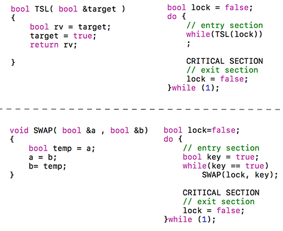
- TSL和SWAP是以原子方式执行的，即作为一个不间断单元执行。
总结
- 上述解决方案有一个共同缺点：繁忙等待。
- 当进程处于临界区时，其他进程尝试进入临界区必须在进入区代码中循环。
- 繁忙等待浪费了一些其他进程可能可以有效使用的CPU周期。
- 这种类型的解决方案也被称为自旋锁。
- 因为该过程在等待锁的过程时定时“旋转”，一直在循环抢锁。
- 自旋锁仅在多处理器系统中有用。可以避免一次上下文切换。
信号量
- 上一节描述的基于硬件的临界区问题的解决方案并不容易推广到更复杂的问题。为了克服这个困难，我们可以使用一个名为semaphore的同步工具。它由Edsger Dijkstra发明并首次在THE操作系统中使用。
信号量S是个整数变量，除初始化之外，只能通过两个标准的原子操作来访问：P(down) 和V(up）。 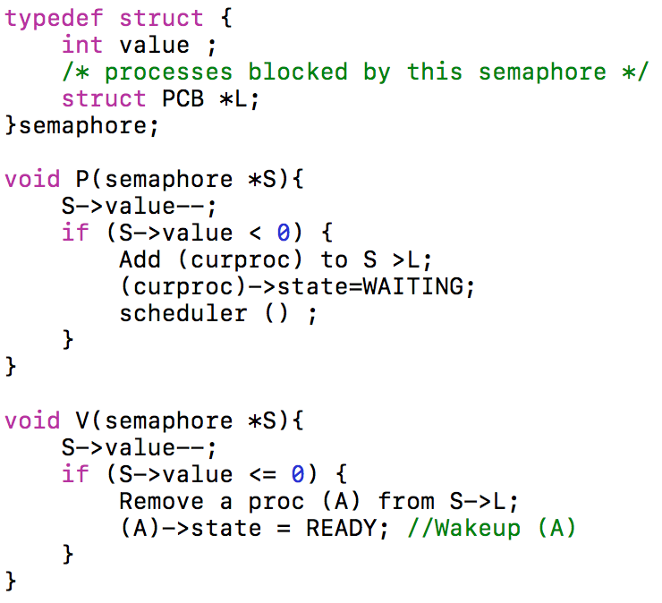- “value”的大小是可用资源(>0)的数量或等待信号量(<0)的进程的数量。
- P 和 V 必须以原子方式执行。
- 有两种方法：①禁用单处理器系统或中断 ②多处理器系统中的自旋锁。
二进制信号量
- 上述的信号量构造通常被称为计数信号量。因为它的值可以覆盖不受限制的域。
- 二进制信号量是一个整数值范围只在0和1之间的信号量。
- 在某些硬件体系结构上实现比计数信号量更简单。计数信号可以使用二进制信号量来实现。 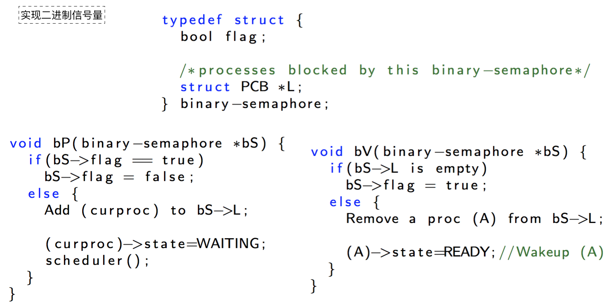 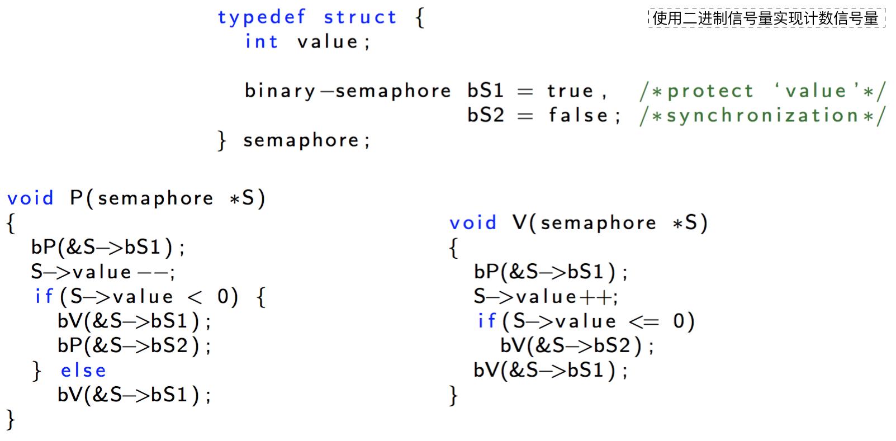
死锁与饥饿
- 虽然信号量为进程同步提供了一种方便有效的机制，但它们的不正确使用仍然会导致难以检测到的错误。
- eg. 假设生产者循环中的两个P操作按顺序颠倒过来。
- 集合中的每个进程正在等待只有集合中的另一个进程可能导致的事件，则会导致一组进程死锁。
- 与死锁有关的另一个问题：饥饿/不确定阻塞，即进程在信号量内无限期地等待。
- 例如，解决
读者-作者问题的方法可能会导致饥饿。 - 通过使用FCFS调度策略可以避免饥饿。
经典同步问题
- 生产者-消费者问题
- 读者-作者的问题
- 一个数据库可以为多个并发进程所共享。
- 读者可能只需要读取数据库，写者可能需要更新数据库(即读和写)。
- 多个读者可以同时访问共享数据，写者对共享数据有排他的访问。
- 哲学家进餐问题
生产者-消费者问题
- 访问缓冲区时使用信号量互斥锁来保护临界区，初始化为值1。
- empty被初始化为值BSIZE(缓冲项个数)，full被初始化为0。生产者为消费者生产满缓冲项，消费者为生产者生产空缓冲项。 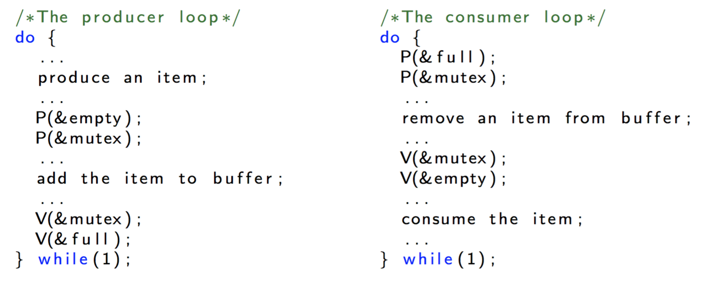
读者-作者的问题
- 信号量
wrt用于保护共享数据对象，初始化为值1。 - 变量readcount用来跟踪多少进程正在读对象，初始化为0。
- 另一个信号量mutex用于确保在更新变量readcount时的互斥，初始化为1。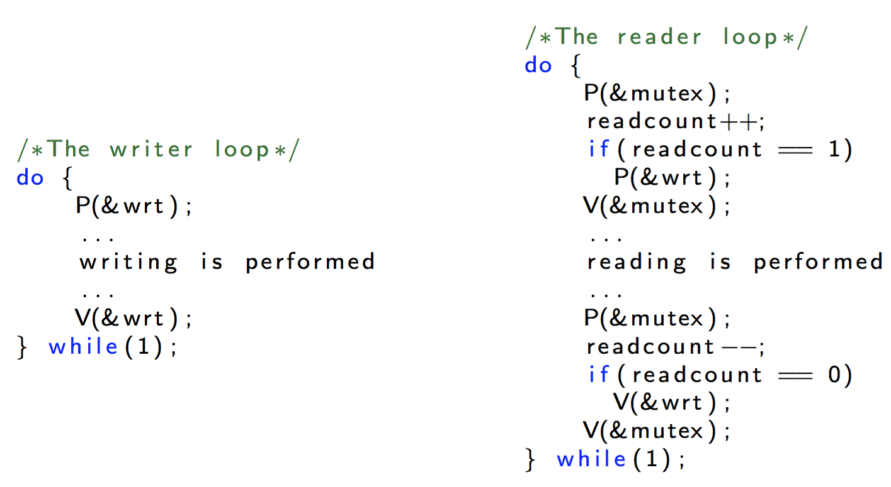
哲学家进餐问题
管程
- 管程：是一组方法、变量、函数..的集合。
- 管程结构确保了只有一个进程可以在管程中处于活动状态。在实现互斥方面很有用。
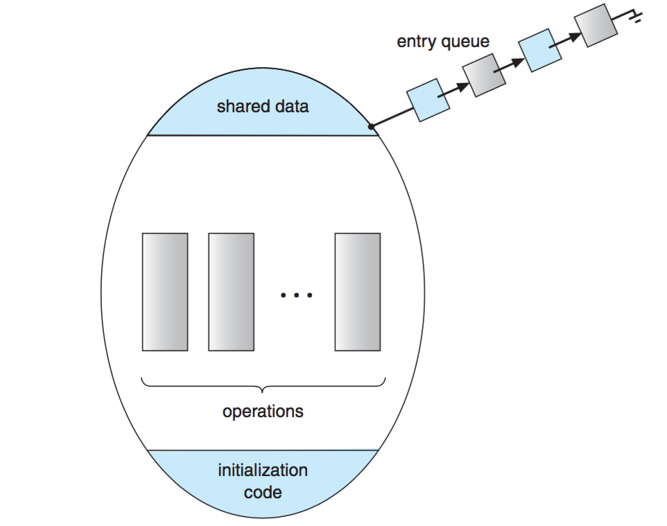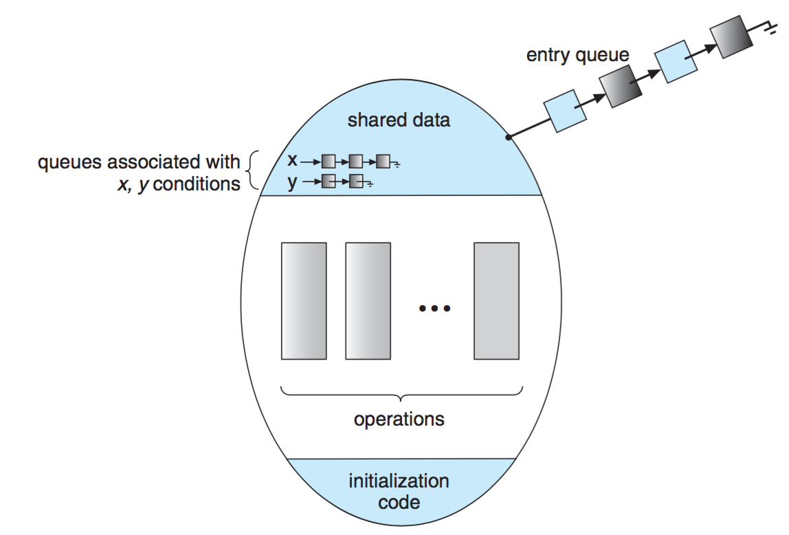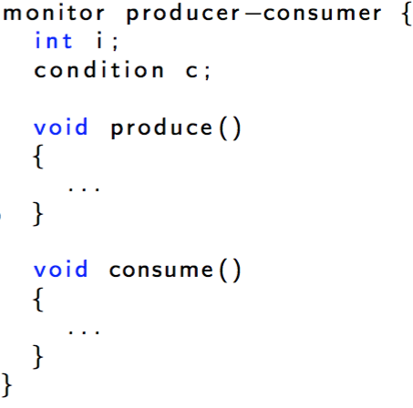
带条件变量的管程
- 管程内部可定义condition类型的变量以提供同步机制，称其为**
条件变量**。条件型变量c实际上是一个指针，它指向一个等待该条件的PCB队列。 - 它只与两个操作相关联：
- c.wait()：意味着调用它的进程会被挂起，直到另一个进程调用
- c.signal()：重新启动一个悬挂的进程。
- 请注意，如果没有进程挂起，那么signal()没有任何影响。
- 管程模式下的 x.signal() 和信号量的 signal() 区别在于：
- 信号量操作 signal() 会影响信号量的状态
- 管程下的 c.signal() 在 c 不存在挂起进程的情况下没有任何影响。
c.signal（）之后会发生什么？
- 假设一个进程P调用c.signal（），另一个进程Q被条件变量c阻塞。
- P完成c.signal（）后，可能P和Q在监视器内同时处于活动状态。
- 这将打破显示器的属性！ 存在三种可能性：
- Hoare风格：暂停P并让Q运行。
- Brinch-Hansen风格：P必须立即离开显示器。
- Mesa风格（Mesa是一种编程语言）：让P运行并暂停Q.
语言支持
- 管程结构需要编程语言支持才有用。也就是说，编译器必须识别管程结构并生成代码以支持其功能。
- 示例：Java（仅包含一个条件变量的Mesa样式监视器）
- 通过将关键字synchronized添加到方法声明中，Java保证一旦任何线程开始执行该方法，就不允许其他线程开始执行该类中的任何其他同步方法。
- Java提供了两种操作：等待并通知阻塞线程，唤醒线程。
信号量与管程的关系
- 信号量和管程在功能上是等效的。
- 但是它们的使用和实现是非常不同的。 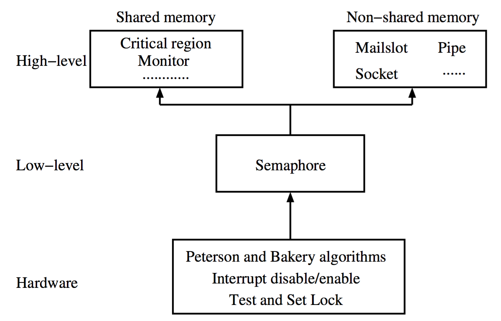
All articles in this blog are licensed under CC BY-NC-SA 4.0 unless stating additionally.